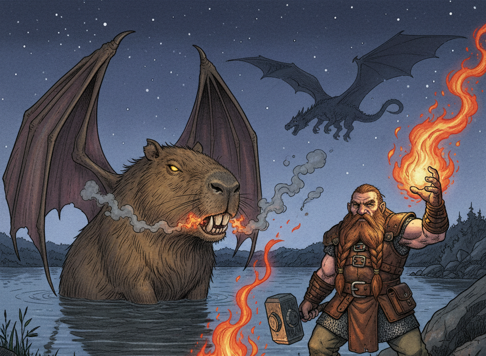
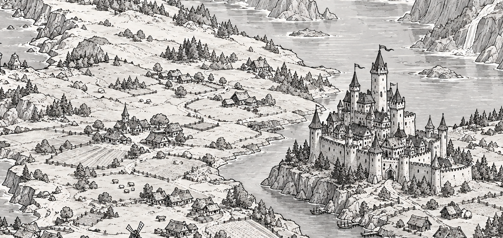
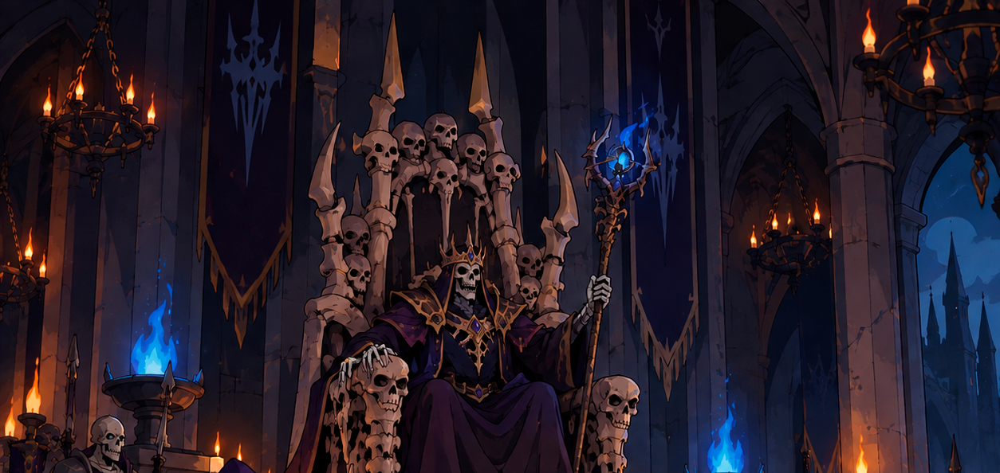
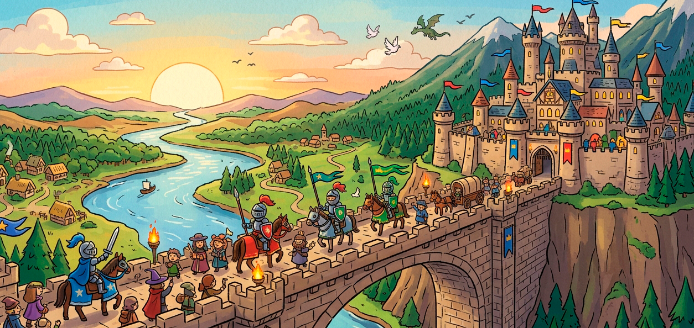

Phantasia, nosso cenário, é sim genérico... Mas isso não é ruim! Ele é genérico no sentido de agrupar uma série de tropes e clichês das fantasias e do RPG em geral, como feudos medievais, elfos, dragões e aventureiros em busca de emoção e riquezas explorando calabouços. E talvez histórias que começam em uma taverna...
Os clichês no RPG são clichês justamente porque funcionam e são divertidos.
Um lugar mágicoPhantasia é um continente mágico, literalmente. Magos, fadas, elfos e dragões são apenas algumas das criaturas que caminham por estas terras.
Toda criança cresce ouvindo histórias sobre tesouros perdidos, monstros malignos, cidades esquecidas e aventuras incríveis. Viajantes sempre trazem novas histórias e lendas de lugares distantes e estranhos, exploradores saem em busca de respostas e novos mistérios... alguns não voltam.
Pântanos tóxicos, florestas cheias de mistérios, ruínas com auras pesadas onde ninguém teve coragem de entrar, torres onde moram feiticeiros reclusos: há de tudo no continente. Qualquer lugar pode ser fonte de grandes maravilhas ou grandes perigos. Mistérios podem se esconder em cada canto de cada lugar. Tesouros maravilhosos estão escondidos nos lugares onde você menos espera. Lendas podem ser verdades, fatos podem ser mentirosos.
Mas em meio ao desconhecido há nações civilizadas, uma vida relativamente calma e ordeira sob governos monárquicos. São essas nações que registraram a história conhecida de Phantasia.
Nesse mundo onde tudo é possível uma profissão se destaca: a do aventureiro. São pessoas que vagam por Phantasia por diversos motivos pessoais, como corrigir injustiças ou ficar rico, mas que possuem uma coisa em comum: vivem a magia em sua totalidade e nunca entram em tédio. Qualquer caminho em Phantasia leva à aventura.

O início da história de Phantasia se perdeu no tempo, mas a tradição oral conserva algumas passagens.
O primeiro rei do Reino de Phantasia contam que foi um certo Marco Luzbrilhante, guerreiro formidável que unificou diversas tribos e vilas sob seu estandarte. Ele não poupou fúria e guerra para trazer a paz ao continente sob seu estandarte. Quando em idade muito avançada, passou para seu filho, Lobo Luzbrilhante, o comando das terras.
Foi o filho de Lobo, que assumiu para si o nome Marco Luzbrilhante II, quem definiu que aquilo era um reino, deu um nome para ele e criou a monarquia, sendo de fato o primeiro rei. Nasceu, de fato, Phantasia como é hoje.
Aqui os relatos são pouco confiáveis, mas se diz que Marco II fez um pacto com fadas para que os campos fossem férteis, com druidas da Floresta encantada para proteger a fauna e flora, e com os ciclopes que viviam além da Muralha, uma grande faixa de pedra que separava Phantasia da Desolação de Gelo, para que as fronteiras fossem seguras.
Marco governou por anos em um castelo próximo aos fiordes de Phantasia, até o dia em que apareceu Maniel Luzveloz.
Contam que sua chegada foi anunciada por um vento quente que soprou do norte — algo impossível, segundo os sábios da época. Maniel surgiu sozinho, montado em um cavalo de pelagem prateada, trazendo consigo uma capa marcada por símbolos que nenhum escriba conseguiu traduzir completamente até hoje.
Alguns afirmam que ele era um descendente distante dos Luzbrilhantes, de um ramo da família de antes do Reino. Outros, que vinha de terras além da Desolação de Gelo, onde o próprio tempo se comporta de maneira estranha. Há ainda quem diga, em voz baixa, que ele não era desse mundo.
Maniel foi recebido na corte de Marco após derrotar, sem esforço aparente e com magia poderosa, três campeões do reino em um único duelo. O rei, impressionado, concedeu-lhe abrigo e título, nomeando-o Guardião da Muralha — posição até então meramente simbólica, mas que passaria a ter grande importância nos anos seguintes.
Foi durante esse período que começaram os primeiros relatos de inquietação além da Muralha. Os ciclopes, antes aliados silenciosos, deixaram de responder aos chamados. Luzes eram vistas dançando sobre o gelo durante a noite, e caçadores retornavam contando histórias de sombras que se moviam de maneiras impossíveis.
Maniel foi o primeiro a alertar o rei de que os antigos pactos estavam enfraquecendo. Marco, já envelhecido, reuniu os representantes das fadas, druidas e dos poucos ciclopes que ainda vagavam além da Muralha. O conclave durou sete dias e sete noites, e ao final, decidiu-se que algo deveria ser feito para renovar os laços que mantinham Phantasia protegida. Mas antes que qualquer ritual pudesse ser realizado, a Desolação de Gelo respondeu.
A chamada Primeira Fratura ocorreu em uma madrugada sem lua. Um estrondo percorreu toda a extensão da Muralha, abrindo uma fissura tão profunda que, segundo relatos, dela emanava um frio capaz de congelar o ar. Criaturas jamais vistas começaram a surgir — seres de gelo e névoa, com formas distorcidas e olhos que brilhavam como estrelas de fogo frio.
Maniel liderou a primeira defesa. Ele reuniu guerreiros, magos, druidas e até algumas fadas guerreiras — raras e temidas — e marchou até a Fratura. A batalha que se seguiu ficou conhecida como a Vigília de Gelo, e durou três dias.
Ao final, a fissura foi contida — não selada, mas contida. E foi quando Maniel desapareceu. Não houve corpo. Não houve testemunha. Apenas seu cajado foi encontrado, fincado no gelo, ainda quente ao toque por restos de magia.
Após a Vigília, Marco ordenou a construção de fortalezas ao longo da Muralha e instituiu a Ordem da Vigília, uma irmandade encarregada de vigiar a Desolação de Gelo e impedir que novas fraturas ameaçassem o reino. Mas os pactos nunca voltaram a ser como antes. As fadas tornaram-se mais distantes, os druidas mais silenciosos, e os ciclopes... simplesmente deixaram de aparecer, todos voltando para o norte gelado.
Alguns séculos depois, bardos ainda cantam que Maniel Luzveloz não morreu naquela noite. Dizem que ele atravessou a Fratura e caminha até hoje pela Desolação de Gelo, lutando contra aquilo que tenta atravessar para o mundo dos vivos. E há quem jure que, nas noites mais frias, uma luz se move no horizonte congelado, rápida como um raio. Como se estivesse em vigília.

Maniel foi um mago poderoso, confidente e conselheiro do rei. Apesar de conhecido por todo o reino, era enigmático e calado, parecendo sempre ocupado. Não havia motivos para duvidar dele, ou de que ele morreu protegendo o reino.
No trigésimo primeiro ano do reinado de Marco II, histórias macabras começaram a surgir. Os mortos se levantavam ao sul do castelo, diziam, e dizimavam vilas inteiras. Trabalhadores das minas ouviam sons estranhos nos túneis e muitos deles desapareciam. Perdeu-se contato com o Monastério Plácido, onde os expoentes da espiritualidade de Phantasia residiam. Com o tempo, viajantes passaram a evitar estradas mais antigas. Animais eram encontrados sem sangue. Crianças falavam com “visitantes” que ninguém mais via.
O reinado ignorava essas notícias e os apelos do povo do sul, tratando-os como ignorantes supersticiosos. Esse clima criou uma insatisfação contra a realeza que foi crescendo até culminar em uma revolução. Os rebeldes eram rapidamente presos e torturados. O povo era vigiado e pressionado. A corte, dividida, rapidamente sucumbiu às lutas internas. Com todas as suas energias voltadas a conter o levante, a monarquia não viu o perigo que veio da Floresta Negra além das minas...
Maniel se revelou 31 anos depois de seu desaparecimento, marchando do Norte à frente de um exército de mortos-vivos e outras criaturas monstruosas, inclusive os monstros de gelo que combateu anos antes. Nada em seu caminho resistiu, e ele chegou facilmente ao castelo do rei Marco II.
Seu corpo já não parecia completamente vivo. Testemunhas falam de olhos vazios, como poços sem fundo, e de uma voz que ecoava como se várias pessoas falassem ao mesmo tempo. Seu estandarte não carregava símbolo algum, apenas um tecido tão escuro que parecia absorver a luz.
A batalha foi cruel, mas rápida: a Guerra do Lich durou apenas um ano. Nesse tempo Maniel se sentou no trono do que ficou então conhecido como o Castelo Sinistro.
O povo fugiu. E atrás deles, isolando para sempre o Castelo Sinistro do resto do continente, árvores retorcidas duras como metal e barreiras mágicas se levantaram: as Fronteiras. Maniel Luzveloz nunca mais foi visto, seu exército nunca mais saiu de sua península. E, depois de algum tempo, o mundo voltou à paz. Mas é uma paz inquieta. Uma paz que observa. Uma paz que espera.
E assim, derrotado e humilhado, odiado pelo povo, terminou a linhagem dos governantes de Luzbrilhante.

O nome Luzbrilhante foi logo esquecido, não tardando para novos líderes se levantarem do povo. O principal deles foi Mortimer Francisco, O Historiador, filho bastardo de Marco II. Ele não herdou apenas metade do sangue real, mas herdou também o peso da culpa de sua linhagem. Diferente de seus antepassados, ele caminhava entre o povo, ouvia suas histórias e registrava tudo, como se temesse que o esquecimento fosse o maior dos inimigos.
Mortimer não era um guerreiro, mas possuía uma eloquência e um fervor que conquistava multidões. Não demorou para que tivesse um pequeno séquito fiel, que suprimiu quaisquer outros nomes que buscavam governar, mesmo os que foram para outros pontos do reino tentar erguer uma nova sociedade independente.
Ele ergueu um novo castelo ao sul das Colinas Selvagens, juntou todos que o seguiram (a maioria, talvez ainda presos no conforto da tradição) e começou a reconstrução do Reino de Phantasia.
Outro grupo, composto majoritariamente pelos rebeldes, viajou ainda mais ao sul, para além do mar, para o que hoje é chamado de Reino Distante, ainda não explorado pelo povo que ficou. Ninguém nunca mais soube deles.
Sob a nova ausência misteriosa do mago louco Phantasia prosperou. Quase cinquenta anos depois, quem governa agora é Vedê, que espera no futuro entregar a coroa de um reino em paz para sua filha, a princesa Yasmin Flechaleve. O rei mantém vigias constantes voltados ao norte, embora poucos admitam publicamente o motivo. Na verdade, quase ninguém sabe a razão além da tradição. A princesa Yasmin, por sua vez, é conhecida por desafiar tradições, frequentemente questionando por que ninguém ousa retornar às terras perdidas na guerra.
E, entre os mais velhos, ainda se sussurra: que as Fronteiras não são apenas uma barreira... mas um selo. E que um dia ele pode se romper.